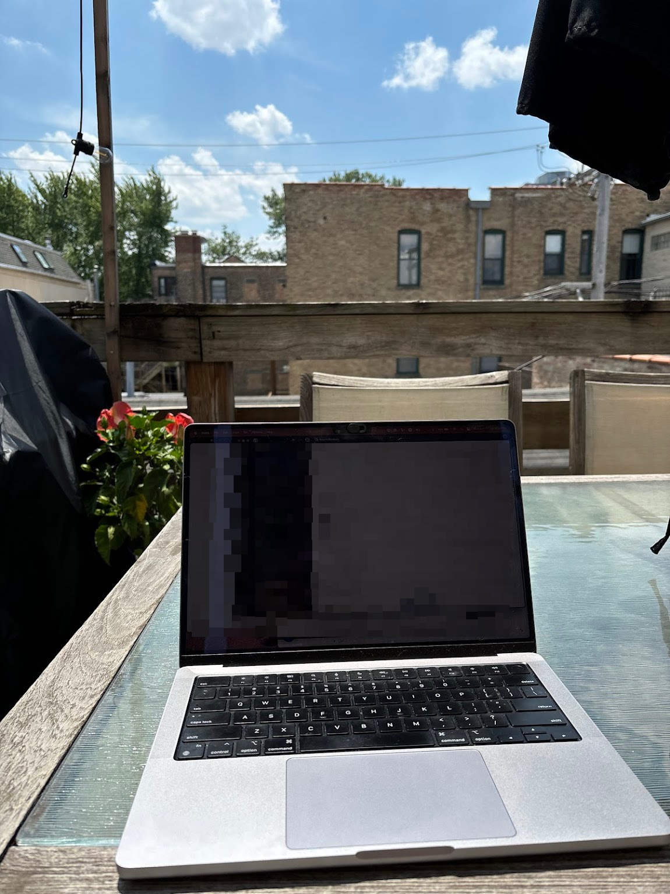
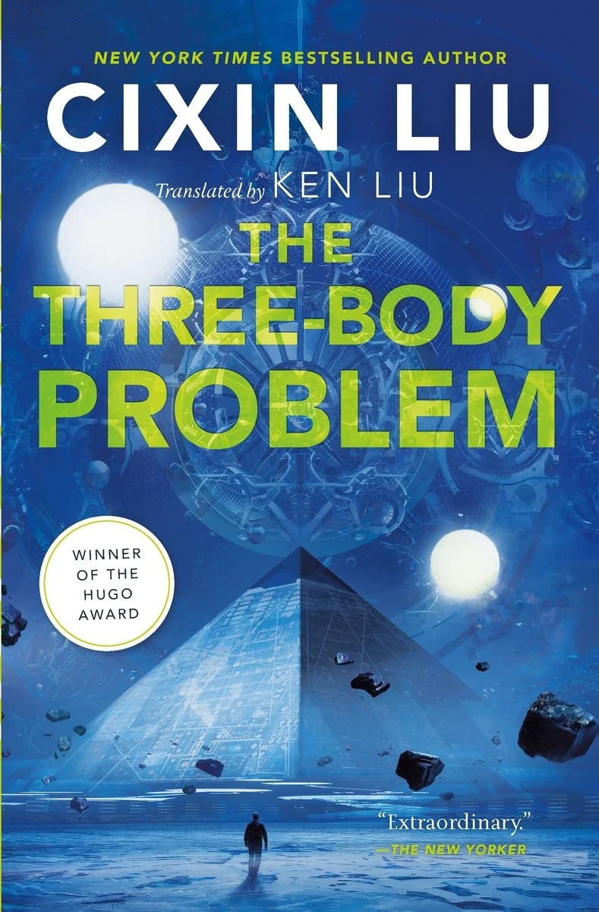
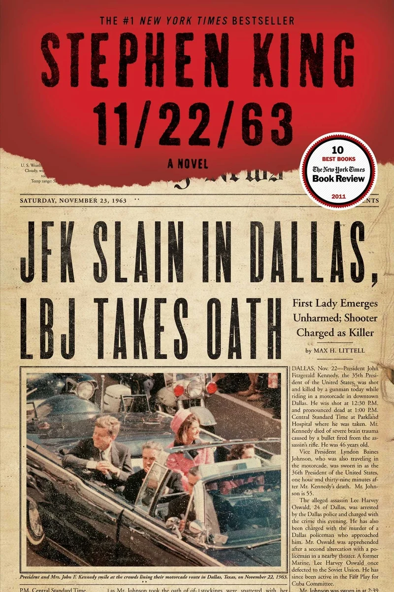
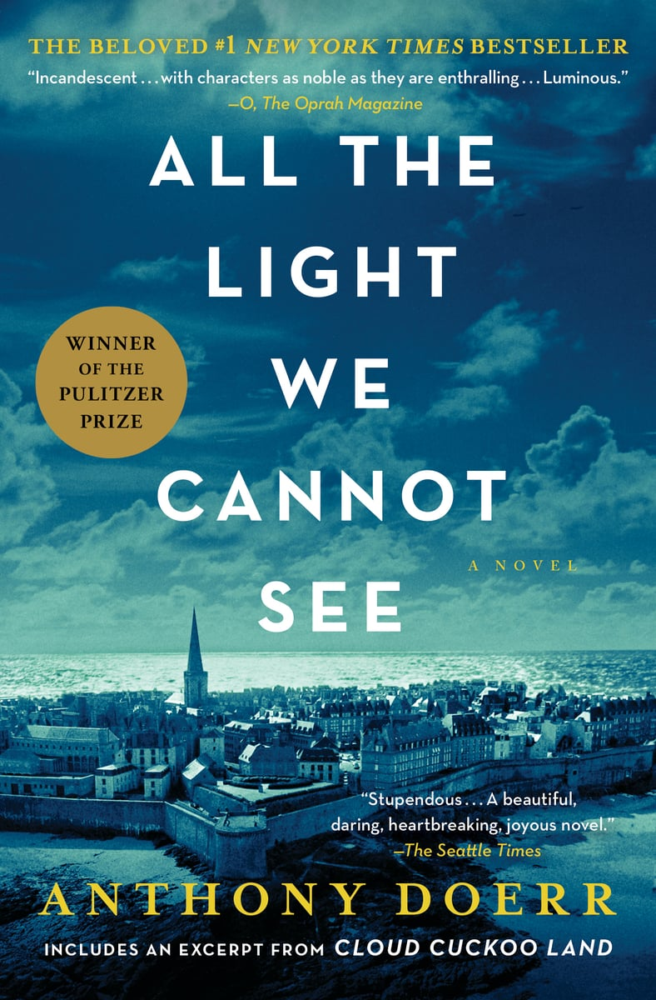
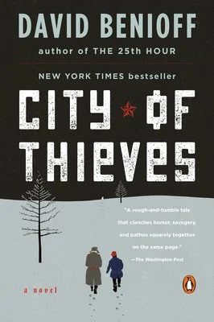
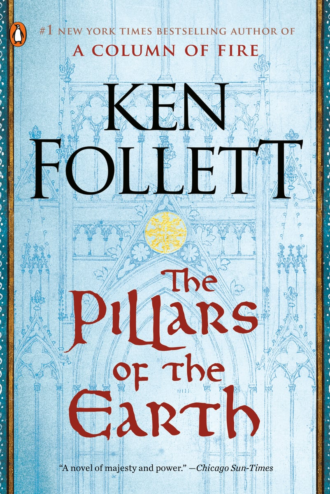
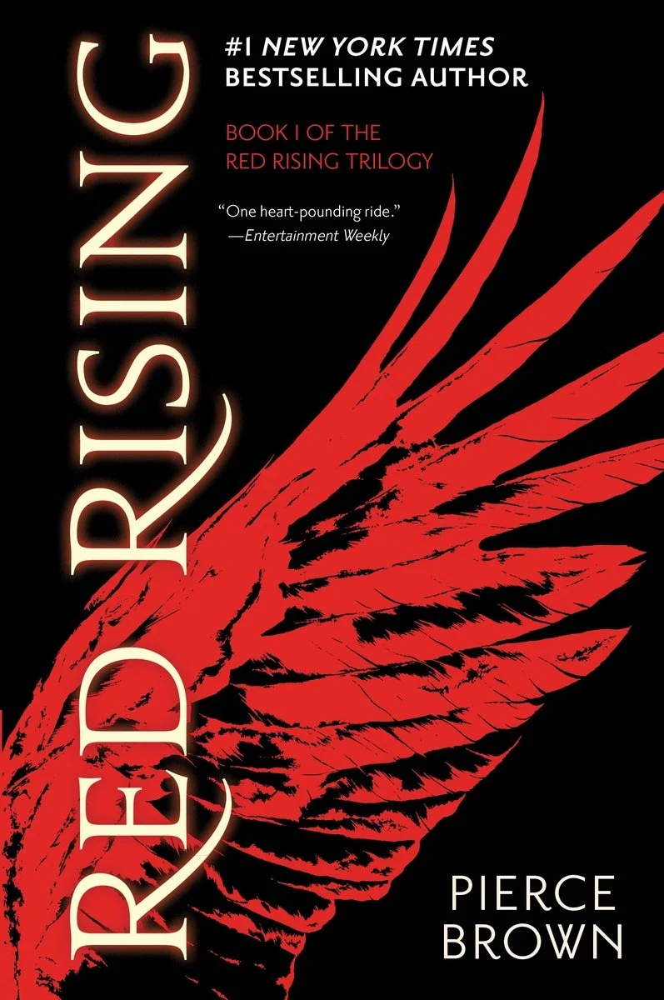
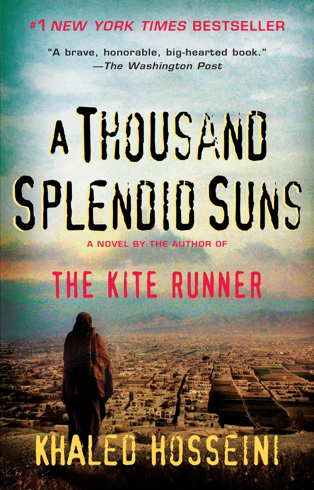

Nice to meet you! I'm Katie. And if you know me, you also know my service dog, Pauline.
This is my story.
Where I'm Based
Chicago is not just where I’m based but part of who I am. The seasons, the food, the lake and the Midwestern charm give me life. I even share a birthday with the city!
What I Enjoy Working On
My whole career has been centered around the abstract side of understanding complex business problems that need solving, but anchoring those solutions in coding and automation. I love nothing more than sinking my teeth into a multi-faceted problem and working with a team to design and build a solution that makes a real impact. I also really enjoy the client-facing side of consulting — collaborating with stakeholders, understanding their needs, and translating that into technical solutions is something I find really rewarding.

Why I Love Coding & Tech
What I enjoy most about coding is the ability to take an abstract idea and turn it into something real with something black and white. It's the perfect mix of art and science. The tech industry is constantly evolving, which means there’s always something new to learn. That mix of creativity, logic, and continuous learning is what keeps the work interesting.
When I'm Not Working
When I’m not working, you can typically find me cooking new recipes for friends or reading a book on my Kindle (you can find my favorites below!) If I could, I'd spend my whole life traveling - there is nothing better than exploring a new city, trying new foods, absorbing yourself in a culture that's both vastly different than yours, yet at the same time so universally human.
What I Care About Most
At the end of the day, the people in my life matter most. My family and close friends have always been the most important part of my life. No matter how busy things get, I always make time for the relationships that matter most.
What I Support
Supporting Type 1 Diabetes Research
Type 1 diabetes research is a cause close to my heart. I try to stay involved by supporting organizations working toward better treatments and ultimately a cure.
Donate
Support organizations funding research and advocacy.
Learn
Understanding Type 1 diabetes helps build awareness.
Get Involved
Participate in walks, events, and community programs.
How Type 1 and Type 2 Diabetes Differ
Pancreas does not make insulin
Body doesn't respond to insulin
Tied to autoimmune, genetic, and environmental factors
Tied to aging, genetic susceptibility, sedentary lifestyle, and obesity
Often begins in childhood or early adulthood
Most commonly diagnosed in people aged 45-64 but can affect people of all ages
Lifelong blood glucose monitoring and insulin therapy through injections or insulin pump
Managing diet and exercise, medications, monitoring blood glucose, possible insulin therapy in advanced cases
~5% of diabetic cases
~90-95% of diabetes cases
Currently cannot be prevented or cured
Possible to prevent or manage it by diet and/or exercise
What I've Read & Loved as of Late






